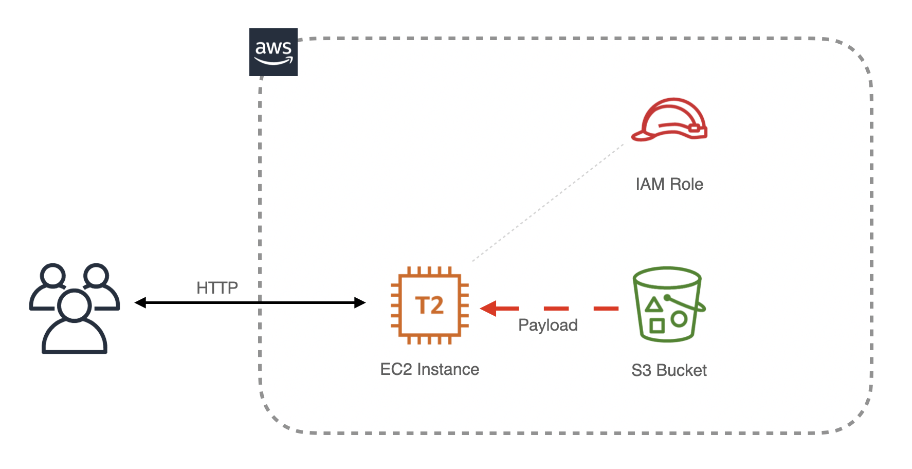

Neal Magee, Ph.D.
Solution Architect, Research Computing
University of Virginia, Fall 2020
Programming Assignment 2: Bootstrapping

Welcome to your second programming assignment. Please follow the steps below.
Steps
- Download this compressed archive with all elements of the PA and unzip it.
- Complete every step in the Instructions document, paying close attention to detail as you proceed.
- Insert all required answers in the PA-Response-Sheet document.
- When you are done, print that document into PDF format and save it as
uva_id-pa2.pdf where you replace uva_id with your UVA user ID.
- Upload that file to the course Collab site, within your folder in FileDrop.